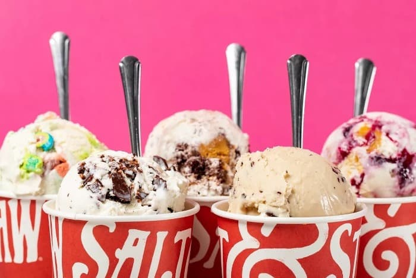
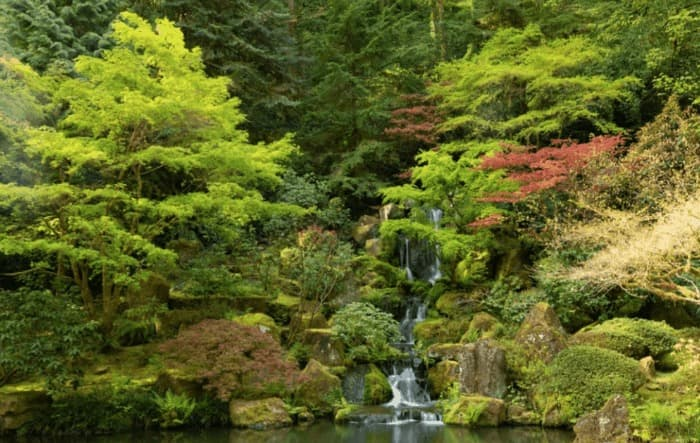
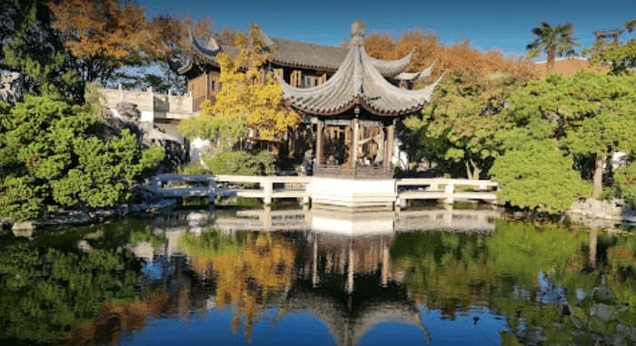
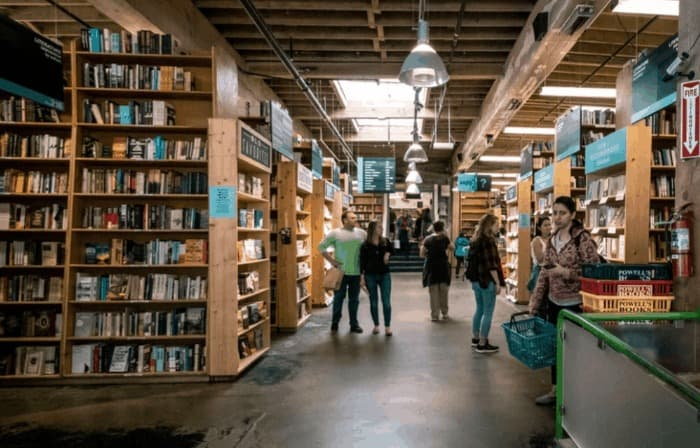
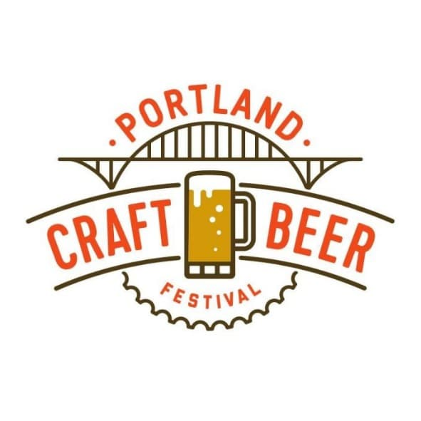
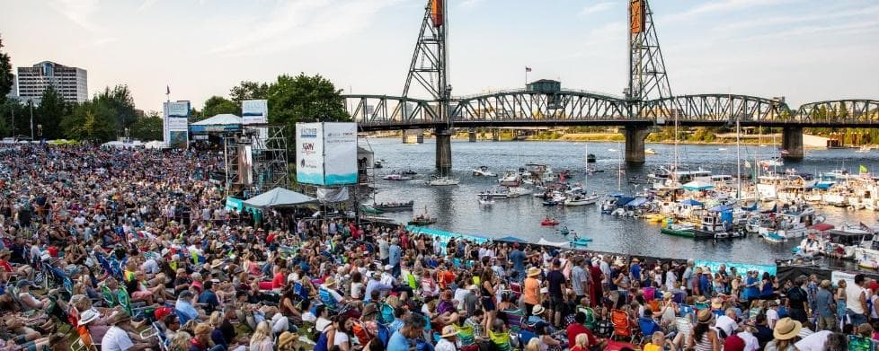
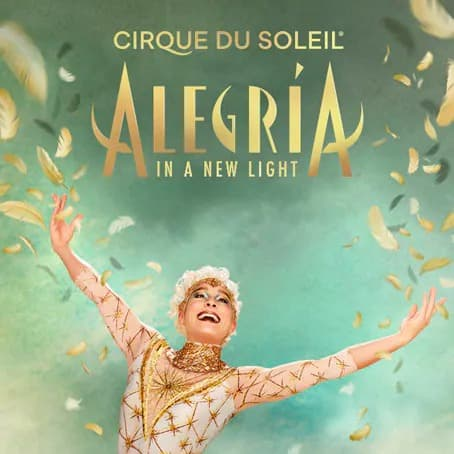
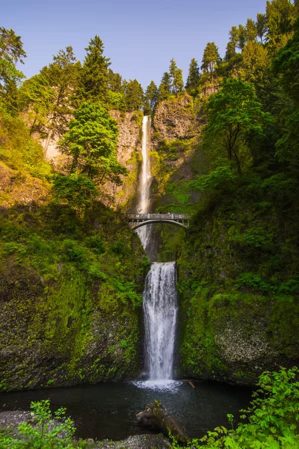

Things to do in Portland
We have compiled this fun list of things to do to make your stay in Portland all the more exciting!
Please visit the social activities page for more networking opportunities!Our Recommendations
Food
Salt and Straw Ice Cream @ 23th street
Quirky flavors & handmade waffle cones draw crowds to this artisanal ice cream maker’s 3 parlors! Lines are long, plan your trip! 
Gardens
Portland Japanese Garden
Influenced by Shinto, Buddhist and Taoist philosophies, Portland Japanese Garden mixes stone, water and plants to create a center for peace and tranquility. Venture into one of the five gardens – flat, strolling pond, tea, natural and sand and stone 
Lan Su Chinese Garden
Tranquil botanical garden featuring rare plants native to China, decorative stonework & a tea shop. 
For Book Lovers
Powell’s City of Books Bookstore
“It’s the largest independent chain of bookstores in the world, and when you visit the aptly named flagship shop, Powell's City of Books , you’ll need a map to find your way around (the store provides one). For a long time, Powell’s enormity was a measure of how much Portlanders loved books. But now, with even big-box bookstores flailing, Powell’s continued success points to Portland’s wily, geeky business acumen: the store does a brisk online business, holds money-making book events and still utterly beguiles everyone else in the world who loves books. Cruise the aisles, grab some coffee and enjoy the lost art of thumbing through bound paper stamped with words.”
- Caryn Brooks, Time Magazine

Events
Portland Craft Beer Festival
Held at the Fields Neighborhood Park, large selection of beers and ciders from Oregon breweries.
https://www.travelportland.com/event/32072194316745/ July 1–3, 2022 12:00pm–10:00pm The Fields Park 1099 NW Overton St Portland, OR 97209 
Portland’s Waterfront Blues Festival
35th anniversary year, shows by Portland’s local music artists. Held in Tom McCall Waterfront Park.
July 1—4 https://www.travelportland.com/events/waterfront-blues-festival/ 
Cirque du Soleil Alegria
Alegría is an all-time Cirque du Soleil classic reimagined for a new generation to fall in love with. At the heart of a kingdom that has lost its king, Alegría witnesses the power struggle at play between the old order and a new movement yearning for hope and renewal.
June 16 - July 17. https://www.cirquedusoleil.com/alegria 
Day trips from Portland
Portland is blessed with a pretty prime geographic location – drive two hours in any direction and you might find yourself at the coast, on a snow-capped stratovolcano, or in the heart of wine country. https://www.lonelyplanet.com/articles/best-day-trips-portland 
[Ethan Dow, Unsplash]